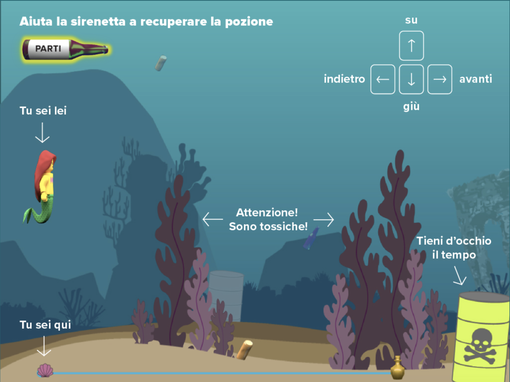
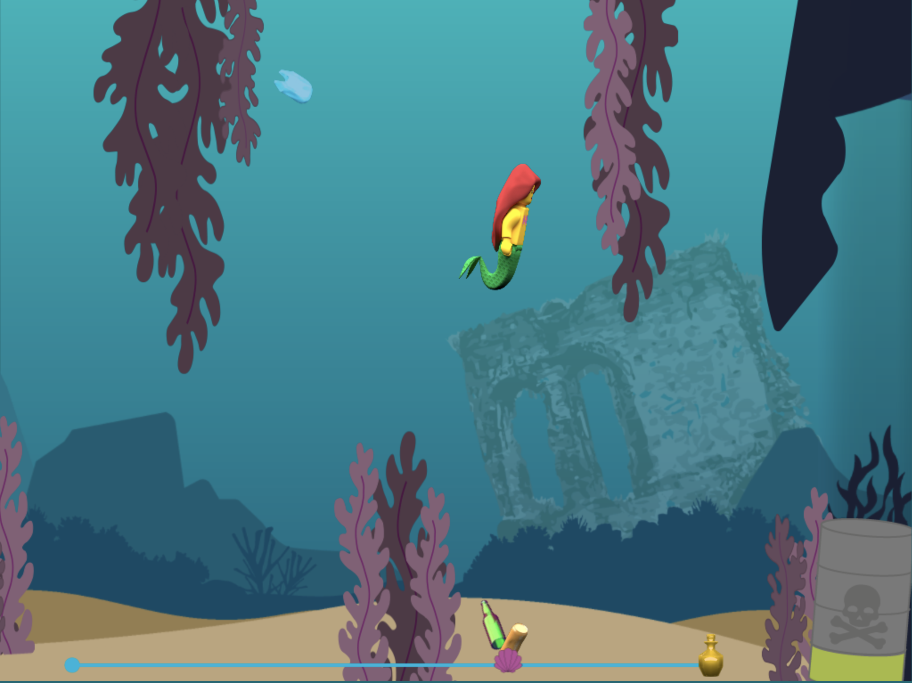
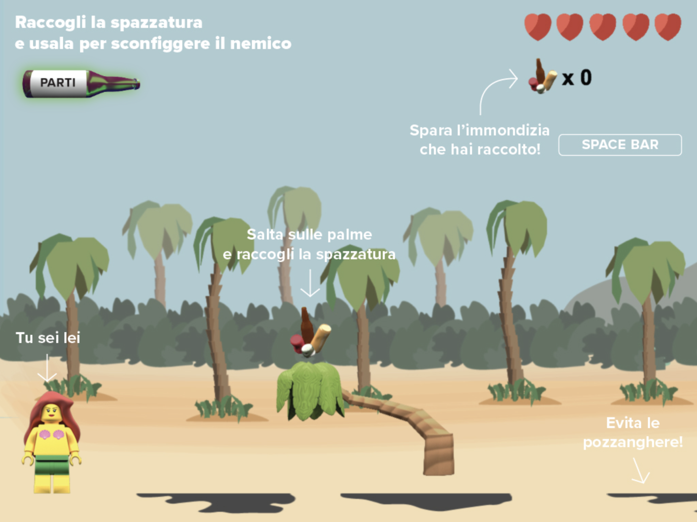

Videogame homepage The Little Mermaid...10 years later


Two narrative moments of the videogame The Little Mermaid...10 years later


First level of the videogame The Little Mermaid...10 years later


Second level of the videogame The Little Mermaid...10 years later
The Little Mermaid...10 years later
During the lab we designed an interactive platform based on the evolution of a traditional fairy tale ten years after its end. We chose to work on The Little Mermaid and use its setting to talk about the pollution of oceans.
The structure is made up of narrative moments, created through 3D rendering, and two levels with different settings, rules and aims.
Laboratorio di Computer Grafica
Proff. M. Bertolo, F. Bruschi, L. Micoli, V. Rana
A.A. 2018/2019
Project by:
Marta Sironi, Matilde Balestri, Sara Davì, Sara Bellini, Matteo Balestrini, Jolanta Kopelian, Miarana Andriantovoniaina, Patricia Vanz Gibellato